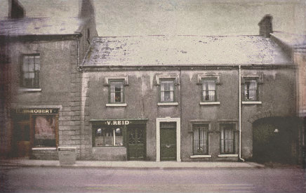
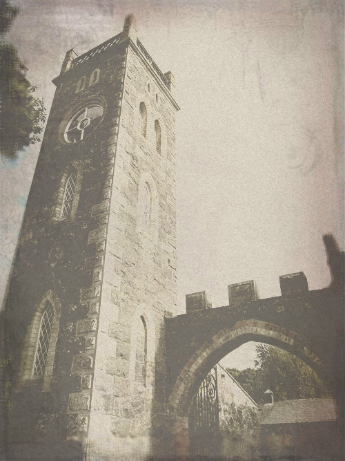
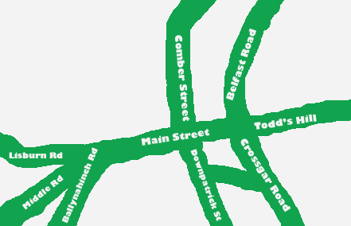
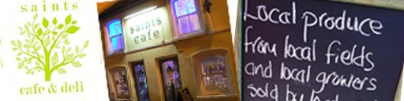

History of Saintfield |
The delightful small town of Saintfield is halfway between Belfast and Downpatrick.
It has a population of around 3000. The area around Saintfield was mature oak forest until the
sixteenth century with a sparse indigenous population under the control of a branch of the O’Neill
family. From about 1625 Scots settlers arrived in the area in small numbers. After the 1641
rebellion was put down by Oliver Cromwell more English and Scots settlers arrived and by 1660
the first census of Saintfield counted 58 English and Scots and 101 Irish inhabitants in the
fourteen townlands of the surrounding area.
Until 1712 Saintfield was known as Tonaghneave – Tamnach naomh, “the field of the saint”.
Neither the origin of the name nor the location of a saintly field are known today.

The town was largely the creation of the Price family. General Nicholas Price bought the land for the town and the surrounding estate in 1709 for his third son. Walter Harris, writing in 1744, says that General Price “made the road passable from Belfast to Down, …encouraged linen manufacturers and other tradesmen to settle there, had a barrack fixed for a troop of horse, and promoted the repairs of a ruinous, now decent, parish church, to which he gave plate and other ornaments”

The three churches on the Main Street were built between 1776 and 1787; the Parish Church in 1776, the 1st Presbyterian in 1777 and the Catholic Church in 1787. The oldest buildings in Saintfield are the Parish Church, its rectory (badly damaged by fire in 2011), The First Presbyterian Church and the “old” Catholic Church, now a youth club. These churches and three weavers’ cottages at the Main Street end of Fair Green are the only buildings in Saintfield that pre-date the 1798 rebellion. All other buildings of the 18th century were burned to the ground as a reprisal following the Battle of Saintfield. Most of the existing buildings on Saintfield’s Main Street date from the early 19th century and share a common architectural style.

- Outdoor Activities
-
Rowallane Gardens
Crossgar Road
Saintfield
BT24 7LH
About half a mile out of town on the Crossgar road is Rowallane Gardens, one of the most beautiful gardens in Northern Ireland.
Carved from the County Down landscape, the garden has grown from the 19th century beginnings of the Reverend John Moore and his nephew Hugh Armytage Moore. Their vision helped create a place where you can leave the outside world behind and immerse yourself in nature’s beauty.
The gardens are a mix of formal and informal spaces with many unusual vistas and unique plants from across the world. The trees, plants and shrubs range in ages, size and colour and create a spectacle throughout the year.
Rowallane Garden is ideal for leisurely walks, afternoon teas in the cafe or just simply relaxing on a seat in the walled garden.
Journey through our garden and discover the secret worlds within our world apart.
Call: (+44) 028 9751 0131 -
A walking tour of Saintfield
The battle of Saintfield, on 9 June 1798, was the opening of the 1798 rebellion in County Down and the rebel forces fought well enough to kill around 60 of the crown forces and force the remainder to retreat to Comber. The dead of both sides in the encounter were buried on an island in the river at the bottom of First Saintfield Presbyterian Church graveyard. This became known as York Island as most of the dead were York Fencibles. There are only two named headstones dating from the battle, both of which are for rebels who were killed in the battle.
Since then the river has been re-routed and the island is now part of the graveyard. The First Presbyterian Church now uses this part of the graveyard for a memorial garden to remember those, on both sides, who were killed in the battle. With the help of funding from Down District Council, a car park, paths and benches were laid out in 2010. Five information panels were created with the help of Saintfield Heritage Society and local historian, Horace Reid. These panels tell the story of Francis Hutcheson, (whose ideas led to the American War of Independence, the French Revolution and the United Irishmen), the formation and ideals of the United Irishmen, the 1798 rebellion, the Battle of Saintfield and the outcome from the rebellion.
These, and other points of historical interest can be visited in a walking tour of the town. You can get a copy of the guide from the Library (Ballynahinch Road) or you can download a copy (in pdf) by pressing the button below.
Download the guide
-
Castle Ward
Strangford
Downpatrick
County Down
BT30 7LS
Unique 18th-century mansion, famed for its mixture of architectural styles
While in Saintfield, why not see the gothic and classical collide at Castle Ward, an eccentric 18th-century mansion resting on a rolling hillside and looking out over the tranquil waters of Strangford Lough in County Down.
Walk or cycle along the Lough trail or through the sheltered woodlands and spot butterflies, rabbits, ducks and swans. Step into a fantasy world of castles and dragons as you explore the Georgian farmyard and the Lough shore, film locations for the smash hit television series Game of Thrones. Stroll through the sunken garden and see vivid reds, yellows, greens and pinks from flowers and subtropical plants in this four tier Victorian garden. Watch the resident crafters create hand-made pottery and jewellery before your eyes, while children draw and drive toy tractors in the barn.
You can also head out on the Lough in a canoe, climb and abseil the cliffs, and build a raft with Clearsky Adventure. Round the day off with a treat in the tearoom or browse the gift shop and pick up a bargain at the second-hand bookshop.
Call: (+44) 028 4488 1204
Visit the Castle Ward Website
- 22nd April, 2014
-
Easter Trail at Rowallane Gardens
Explore the nooks and crannies around the beautiful garden while following the clues to get an Easter surprise. Fun for everyone! Egg trail £1 per child 10.30am-3pm
Call: (+44) 028 9751 0131
- 3 May to 4 May, 2014: 12:00pm to 5:00pm
-
Spring Plant Fair at Rowallane Gardens
Local specialist nurseries and Rowallane Garden plants for sale.
Call: (+44) 028 9751 0131
- Coffee Shops
-
Norr & Brown
1 Todd's Hill
Saintfield
BT24 7AR
A beautiful period cafe and chocolatier.
Call: (+44) 07921846468
-
Saints Cafe

11-15 Main St
Saintfield
BT24 7AA
Fine fresh homemade food; soups, stews, sarnies, toasties, paninis, baguettes,pastas, salads, traybakes, muffins and scones all made fresh every day.
Hours: Mon - Sat; 8am - 4.30pm
Call: (+44) 02897519546
Visit the website
-
Katie Jaynes Cafe And Snack Bar
66 Main Street
Saintfield
Call: (+44) 02897512709
-
Lifestyle Coffee Shop
54 Main Street
Saintfield
Call: (+44) 02897511429
Visit the website
- Restaurants & Gastro Pubs
-
The White Horse
49-53 Main St
Saintfield
BT24 7AB
The White Horse Inn dates back over 200 years as an old coaching Inn and is now a busy Bar and Bistro. The White Horse offers something for everyone with a cosy reading area beside the log stove to comfy booths to gather with friends, from live music and quizzes to relaxing and enjoyable dining.
At the bar you will find a wonderful selection of our own hand crafted beers ranging from our draught lager, stout and ale to more traditional hand pulled Real Ales, so it's not surprising to know that The White Horse Inn won County Down pub of the year 2009 and CAMRA pub of the year for Northern Ireland 2009.
Bar Opening Hours:
Mon - Sat: 11.30am - 1.00am
Sun: 12 noon - 10.00pm
Bistro Opening Hours
Mon - Thu: 11.30am - 8.00pm
Fri - Sat: 11.30am - 9.00pm
Sun: 12 noon - 8.00pm
Call: (+44) 02897511143
Visit the website
-
Temple Golf And Country Club
60 Church Road
Lisburn
BT27 6UP
Restaurant, golf, tennis
Call: (+44) 02892639213
Visit the website
- Takeaway Food
-
Something Italian
1a Main Street
Saintfield
BT24 7AA
Pizza.
Call: (+44) 02897512891
-
Eating Options
55 Main Street
Saintfield
Fish & Chips
Call: (+44) 02897510953
-
Lucky Boat
26 Main Street
Saintfield
Chinese restaurant & takeaway
Call: (+44) 02897510621
Visit the website
-
Main St. Diner
86 Main Street
Saintfield
Traditional sit-in fish & chip shop
Call: (+44) 02897511771
Visit the website
-
Mayflower
7-9 Main Street
Saintfield
BT24 7AA
Chinese and European takeaway
Call: (+44) 02897519888
- B&Bs
-
Norr & Brown
1 Todd's Hill
Saintfield
BT24 7AR
A beautiful period cafe and chocolatier.
Call: (+44) 07921846468
-
Green Acres
119 Carryduff Road
Lisburn
BT27 6YL
A family run Bed and Breakfast
Call: (+44) 02892638631
- Self-Catered Accommodation
-
Ballinderry Station Cottage
2 Station Road
Lisburn
BT28 2ET
5* Self-Catering Cottage. With 3 large bedrooms, sleeping up to 7, it provides great space for the larger family or group. And of course, free wi-fi.
Call: (+44) 02890610957
Visit the website
-
Brookvale Cottage
10 Vale Road
Crossgar
BT30 9JN
A beautiful converted barn
Call: (+44) 02844830910
Visit the website
-
Glassdrumman Cottage
148 Monlough Road
Saintfield
BT24 7EU
Traditional 19th century whitewashed farm cottage
Sleeps 4
Call: (+44) 02897511599
-
Late & Early Cottage
89 Ballynahinch Road
Saintfield
BT24 7LZ
Self-catering accommodation in†18th century stone cottage
3 bedrooms: 1 Twin, 2 Double
Call: (+44) 02897511483
-
The Hermitage Cottage
14 Drumnaconnell Road
Saintfield
BT24 7N
A self catering cottage
Call: (+44) 02897510232
-
First Presbyterian Church
21 Main St
Saintfield
BT24 7AA
Sunday service at 11am
Call: (+44) 02897519883
-
Church of Ireland
43 Main St
Saintfield
BT24 7AL
8.30am Holy Communion
10.30am Morning Worship
Call: (+44) 07519668747
-
Roman Catholic
Mary Mother of the Church
33 Crossgar Road
Saintfield
BT24 7JE
Sunday Mass at 11am
-
Baptist
Saintfield Baptist Church
51 Crossgar Road
Saintfield
BT24 7AS
Sunday Service at 11.30am & 7pm
Visit the website
- Gift Shops
-
Jacksons Home
46-48 Main St
Saintfield
Call: (+44) 02897511429
Visit the website
-
Greenwood & Co.
64 Main St
Saintfield
Handmade jewellery
Call: (+44) 02897519587
Visit the website
-
Rowallane Pottery
Rowallane Gardens
Saintfield
Handmade pottery
Visit the website
- Antique Shops
-
Agar Antiques
92 Main St
Saintfield
Call: (+44) 02897511214
-
Antiques at the Stile
52 Main Street
Saintfield
Call: (+44) 02897510844
-
Christine Deane
90 Main Street
Saintfield
Call: (+44) 02897511334
Visit the website
-
Courtyard Antiques
Courtyard
68 Main Street
Saintfield
- Pharmacies
-
Gordons Chemists
59 Main Street
Saintfield
Call: (+44) 02897511333
Visit the website
-
Saintfield Pharmacy
5 Main Street
Saintfield
Pharmacy
Call: (+44) 02897510277
- Boutiques
-
Jacksons 38 Boutique
38 Main Street
Saintfield
Call: (+44) 02897511429
Visit the website
-
Marshalls of Saintfield
72-74 Main Street
Saintfield
Gents and Ladies Fashions
Call: (+44) 02897510315
- Butchers
-
Martin Phillips
Comber Street
Saintfield
-
Masseys of Saintfield
34-36 Main Street
Saintfield
Call: (+44) 02897510456
Visit the website
- Grocers & Wine Shops
-
WineWorks
2 Comber Street
Saintfield
Off sales
Call: (+44) 02897511209
Visit the website
-
Spar
11 Crossgar Road
Saintfield
Supermarket
Call: (+44) 02897510251
-
Vivoxtra
1 Ballynahinch Road
Saintfield
Supermarket
Call: (+44) 02897511949
- Bakeries
-
Saintfield Griddle
19 Main Street
Saintfield
Home bakery
Call: (+44) 02897510270
- Beauty Salons and Hairdressers
-
Rowallane Beauty
2c Comber Street
Saintfield
Beauty salon
Call: (+44) 02897519529
Visit the website
-
Salon 68
2c Comber Street
Saintfield
Hairdresser
Call: (+44) 02897519242
-
Storm Beauty Clinic
30a Main Street
Saintfield
Call: (+44) 02897511733
-
The Barbers Shop
84 Main Street
Saintfield
Gents' Barbers
Call: (+44) 02897511080
-
The Beauty Boutique
28 Main Street
Saintfield
Beauty salon
Call: (+44) 07523376971
-
Saintfield Post Office
3 Main Street
Saintfield
Call: (+44) 02897510221
-
Danske Bank
32 Main Street
Saintfield
Call: (+44) 02890045540
Visit the website
-
Progressive Building Society
2 Crossgar Road
Saintfield
Call: (+44) 02897511120
Visit the website
- Bus Services
-
Ulsterbus
Saintfield is well served by the 15, 215 and 515 Belfast - Downpatrick bus services. To travel to Belfast from Saintfield, board the bus at the Bus Stop on the Belfast road. Check the signs at the bus stop or the translink website for accurate service times.
Call: (+44) 02890666630
Visit the website
- Taxi Companies
-
Ballynahinch Taxis
A local taxi company serving the Saintfield Area. Great rates. Call now.
Call: (+44) 02897563322
Have we got something wrong?
What - your halloween festival isn't in May?
If we've made a mistake please let us know by emailing us at feedback@IrishTownApps.com or tweet us by clicking below...
 |
Thanks for keeping us up to date and accurate.
Does your town deserve an App?
Would you like to see an App providing tourist support for your town? We at IrishTownApps.com do this because we love the technology and are huge fans of small town Ireland. Click on the button to visit our website and see App our funding arrangements.
Disclaimer:
While every effort was made to ensure that the information contained within the Saintfield Guide was accurate at the time of publication, we cannot be held responsible should this prove otherwise or should changes occur. By downloading the Sainfield Guide, the user agrees that no responsibility for the consequences resulting from any inaccurate information shall be incurred on the application or guide publisher and their clients, or on the third parties mentioned therein. All information is subject to change and users are further encouraged to check information directly with the third party establishments should they wish to make bookings.
Copyright © 2014 IrishTownApps.com. All rights reserved.